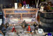
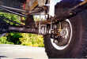
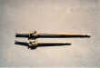
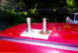
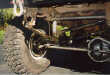

There are many advantages to swapping an early Bronco Dana 44 into the front of a Wrangler YJ. The Dana 44 has larger u-joints, bigger ring and pinion, larger axle shafts (30 spline), beefy internal hubs, 5 on 5.5" wheel bolt pattern, and good pinion placement. The Dana 44 also has more ring and pinion options than the reverse cut Dana 30 in the YJ. Lockers are generally less expensive for the Dana 44 since it is such a common axle.
The pinion placement is a big advantage of the early Bronco Dana 44 over other Dana 44s because it is set up for a drivers drop transfer case. The pinion lines up with the stock YJ NP207 or NP231 transfer case. There is no need to swap in a different transfer case as you would if you were to use a Scout Dana 44. The housing is aligned in such a way that there is plenty of room for a spring perch, but it does not interfere with the engine oil pan.
A disadvantage of the early Bronco front Dana 44 is it uses a smaller axle shaft u-joint than later Dana 44s used in other vehicles. They are also not too common, and there is more prep work to swap one in than there is for other front Dana 44s.
The job of removing unnecessary brackets and mounts was started after the axle was torn down and all the parts were filed neatly away. The early Bronco Dana 44 uses a 2 link coil suspension up front and there are large radius arm mounts welded to the axle housing. Removing all the mounts and brackets took 6-8 hours and at least eight 3" cutting wheels (used my dad's electric grinder).
 The radius arm mounts are huge chunks of steel welded onto the tubes and they take a LOT of persuasion to remove, but it can be done with enough time and effort. The best technique appeared to be to cut into them about 3/8" back from each weld (top and bottom). Once one of the cuts is through, pound the ^#%$@ out of it until it comes off, then grind away the remaining material with a carbide bit.
A local guy set up my front gears, installed new ball joints in the knuckles, and installed the knuckles onto the axle. He also packed my new Timken wheel bearings with grease and replaced all axle seals. The carrier, pinion, and front spindle bearings were also replaced. When I picked up the axles I was told that the front end had a factory limited slip in it. Never having seen one before, I hadn't even noticed. This stroke of luck almost made up for the new gears the rear end needed...
Rather than fabbing up spring perches, I bought two pairs of adjustable clamp-type perches from Lou Feger's Racing (p/n 20232-1) in the US. This let me get my rear pinion angle and front caster fine-tuned after the axles went into the Jeep. Since these perches are made for a 3" diameter axle tube, I had to make some shims out of 0.120" 3" steel tubing for the front end, which has a tube diameter of 2.75". Once the brackets were made, my friend Larry very kindly helped out by welding them onto the axle housings for me.
The big concern with the perches and axle is that the front diff was 3-4" closer to center than the YJ Dana 30, so I couldn't be sure if there would be a conflict with it and the oilpan. After measuring and test fitting, it was found that the oil pan would not be a problem. The driver side spring perch is not integrated with the diff housing so, setting the pinion angle is relatively easy.
 This is where the real design work was. Brackets were needed to be able to mount these axles of mine into the YJ, and they all had to be custom made. So I did some drawings, bought some steel, and went to work. A band saw, drill press, belt sander, and my dad's trusty grinder were all the tools needed to make shock mounts and a track bar bracket. The steel was all .120" hot-rolled square tubing and plate.
Since this was all custom, I made the shock brackets such that the shocks would not hang down below the axle tubes. This was a compromise between ground clearance and shock travel. I chose clearance, knowing that I could raise the frame mounts if necessary later.
There are two common types of regular duty Dana 44 shafts, those with small u-joints and those with large ones and I got one of each. The stock shafts for the early Bronco Dana 44 have small u-joints,  but the short one (driver's side) can be directly replaced with a shaft from an F150. The F150 shaft has has the large u-joint, and somebody had already done that with my front end before I bought it. Cool! Unfortunately there's no such easy upgrade for the long side shaft, so I'll just have to keep an eye on it. One option to upgrade the long side is to cut down and respline a F150 long side shaft, but that's more ca$h.
All early Broncos came with drum brakes from the factory except for the last two years of production in '76 and '77. My '73 front axle had drums on it when I bought it, and there was no way I was going to keep them. A front disc brake swap was in order and I found an excellent article on the web on disc brake swaps for early Broncos. It is almost a bolt-on swap: spindles, caliper mounts, and calipers from a '76 Chevy Blazer plus hub/rotor assemblies from a '78 Ford F150 or Bronco and the original Bronco knuckles. It is a real mix-n-match affair, but it worked like a hot damn. It gave me nice big 11" discs for stopping 35" tires.
Pearl of wisdom: Get really cruddy, rusted calipers at wrecking yards for next to nothing and use them as cores to purchase rebuilt calipers.
The only "rework" required is to grind away some material on the calipers, but that was pretty easy. This method proved a lot cheaper (for me) than swapping in parts from a '76–'77 Bronco or F150 D44, which was the other option. I bought new hub/rotor assemblies and and brake pads and I bought rebuilt calipers. Everything else was purchased at local wrecking yards and cleaned up, including the caliper mounting bolts and banjo bolts, which proved surprisingly difficult to find.
Chevy spindle on the left, Bronco on the right

The disc brake swap instructions say that you're supposed to keep the hub body in place with a flat washer bolted to the end of the stub shaft instead of using the c-clip that comes with the hub. This is necessary because the Chevy spindle is slightly longer than the Bronco one. The passenger side worked out fine that way. However, it turned out that the F150 shaft on the driver side has a slightly longer stub shaft, so I was able to get the c-clip on there and avoid the washer thing. The disc brake swap lets you keep the internal type locking hubs, which are said to be stronger than the external type used on CJs and Scouts. I went with a pair of Warn Premium hubs.
To use my stock YJ steering box and drag link, it worked out best to use a YJ tie rod. The Bronco tie rod I had was bent, and it's drag link connection was way too close to center to work properly. I bought a YJ tie rod at the local wrecker and had it shortened 4" (at the adjuster) and re-threaded. The tapered ends of the YJ tie rod ends were smaller than the tapered holes in the Bronco knuckles, so I had a machinist friend make two tapered bushings to fit in between.
The tapered holes on the early Bronco knuckles are about 1" further away from the balljoints than the YJ knuckle, so I've lost a little turning radius. It isn't enough that I really notice, and the knuckles didn't really have the space to drill new holes. Having the tie rod further away is probably necessary in order for it to clear the diff cover at full lock. An option to regain some turning radius might be to use a longer pitman arm.
The front was quite a bit more work than the rear, which makes sense in retrospect. There were many other details to my swap such as shock selection, drive shaft length, and clearance because of the spring over axle swap I did at the same time. These would not normally be issues if there were no changes to suspension.
Even if you do not change the suspension, you will have to do something about brake hoses, u-bolts, and u-bolt plates. The changes I made are are discussed in the spring over axle article.
{kind=link}
{kind=link}
{kind=link}
{kind=link}